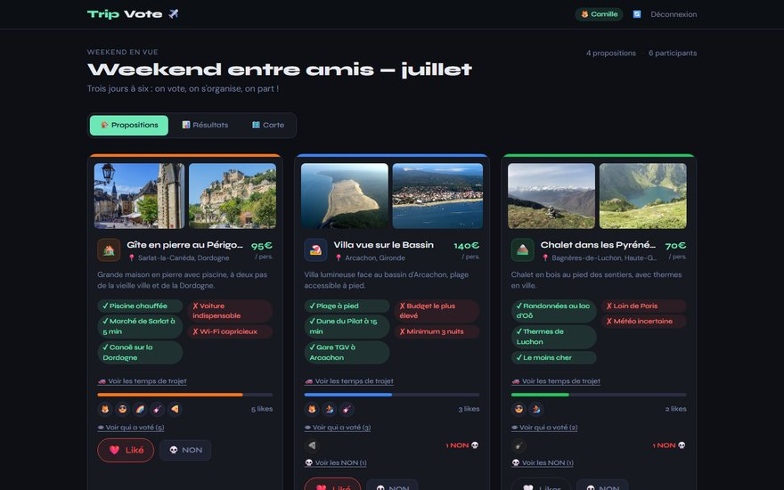
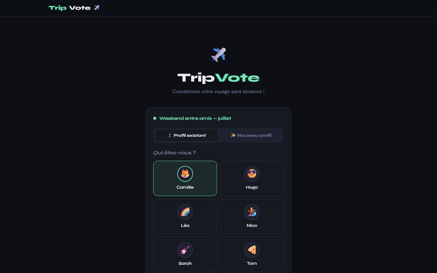
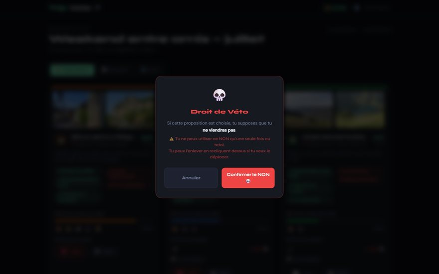
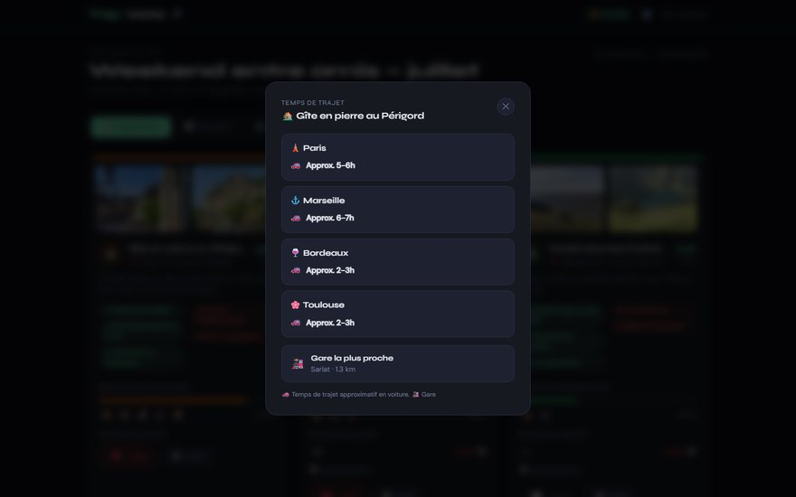
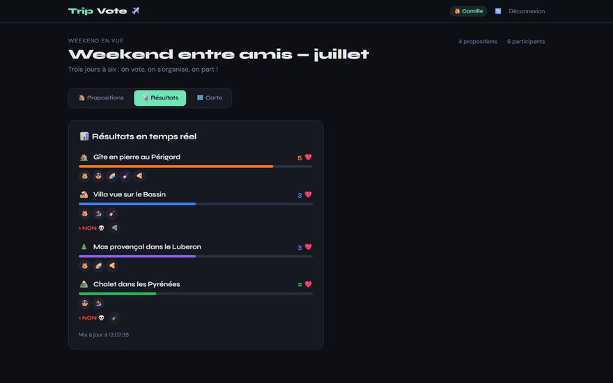
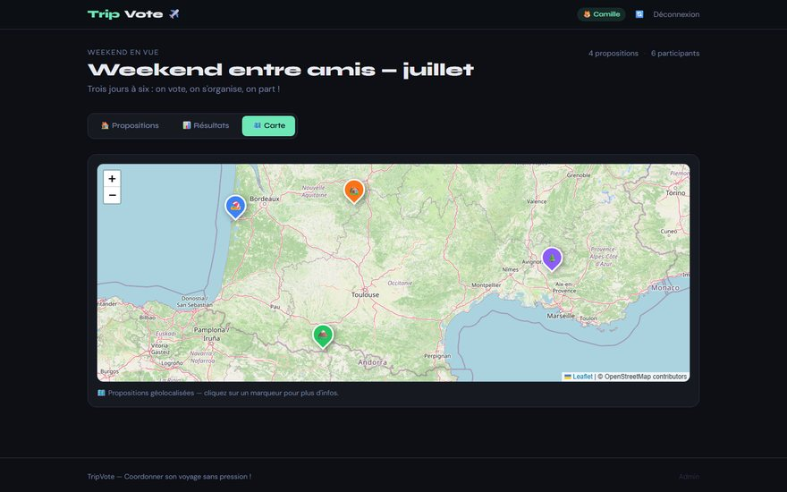
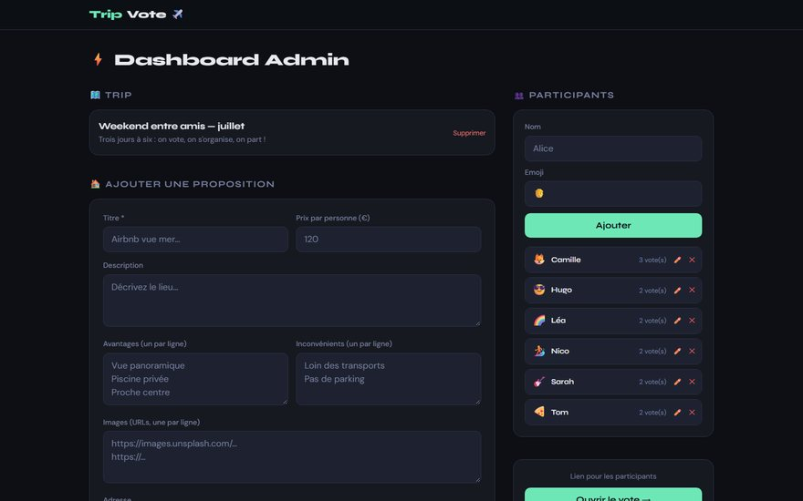

Entrée sans compte
On choisit son prénom et un emoji, c'est tout. Un cookie de reconnexion (30 jours) évite de se réidentifier, et la saisie d'un nom détecte les profils similaires pour éviter les doublons.
TripVote ✈️
Application web collaborative · Flask
Chacun propose, chacun vote, et le groupe voit le résultat en temps réel. Les participants entrent sans créer de compte, disposent d'un droit de véto unique, et comparent les options sur une carte avec les temps de trajet depuis leur ville.

Un outil de décision de groupe complet, de la saisie des options jusqu'au verdict.
On choisit son prénom et un emoji, c'est tout. Un cookie de reconnexion (30 jours) évite de se réidentifier, et la saisie d'un nom détecte les profils similaires pour éviter les doublons.
Chacun peut aimer autant de propositions qu'il veut ; les barres de progression et les avatars des votants montrent d'un coup d'œil ce qui fait consensus.
Un seul NON par personne, sur toute la durée du vote : il signifie « si c'est ça, je ne viens pas ». Il se déplace ou se retire, et une confirmation évite les clics accidentels.
Adresses géocodées (Nominatim), propositions placées sur une carte Leaflet, temps de trajet en voiture calculés par OSRM depuis Paris, Marseille, Bordeaux et Toulouse, et gare la plus proche.
Classement rafraîchi automatiquement toutes les 5 secondes : chaque vote ou véto apparaît chez tout le monde sans recharger la page.
Création du voyage, gestion des participants, ajout et édition des propositions (galerie photo, prix par personne, pour et contre, lien vers l'annonce, couleur et icône), réinitialisation complète.
Trois rôles, un seul lien à partager.
Cliquez une capture pour l'agrandir. Captures réalisées sur un voyage fictif.






Une application Flask classique, pensée pour un hébergement gratuit.
| Brique | Rôle |
|---|---|
| Flask + Jinja | routes, rendu des pages, API JSON des résultats et de la carte |
| SQLAlchemy + PostgreSQL | voyage, propositions, participants, votes et vétos (contraintes d'unicité) |
| Nominatim (OpenStreetMap) | géocodage des adresses, recherche de la gare la plus proche |
| OSRM | temps de trajet routier depuis les villes de départ |
| Leaflet | carte interactive des propositions |
| Gunicorn sur Render | déploiement, configuration par variables d'environnement |
Python côté serveur, JavaScript sans framework côté client.
Choix d'ingénierie — base PostgreSQL externe pour survivre au
disque éphémère de Render ; secrets (clé de session, mot de passe admin) uniquement en variables
d'environnement ; cookies SameSite=None; Secure pour que la session tienne quand la démo est
intégrée dans une autre page (iframe).
Démo partagée — la démo publique est commune à tous les visiteurs : les profils et les votes des autres y apparaissent. L'espace admin est réservé.
TripVote is a collaborative web app for a group of friends choosing where to spend a weekend. An organiser adds the candidate places (photos, price per person, pros and cons, address); participants join without an account, like as many options as they want and hold a single veto. Addresses are geocoded with Nominatim, driving times from four French cities are computed with OSRM, options are shown on a Leaflet map, and results refresh live every five seconds. Built with Flask, SQLAlchemy and PostgreSQL, deployed on Render. The user interface is in French.